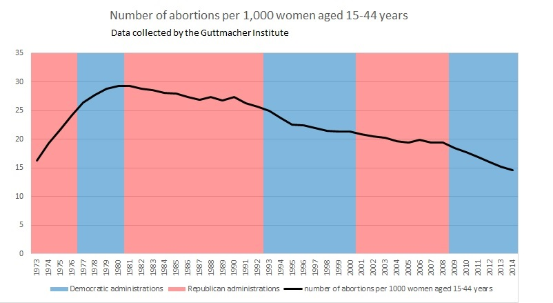

This is a response to Terryl Givens' article about abortion: https://publicsquaremag.org/editorials/a-latter-day-saint-defense-of-the-unborn
As far as I can tell, Givens advocates for stricter laws against abortion. Perse spends most of the article trying to show that abortion is bad, and then calls for members of the Church of Jesus Christ of Latter-Day Saints to be privately and publicly Pro-Life.
My response to Givens is that anti-abortion laws do not result in fewer abortions, so they don't help anyone, not even the unborn. I adopt a practical solution to the problem of abortion, which is to 1) help women choose when to become pregnant and 2) help women care for themselves and their children.
I agree that abortion is morally bad in most cases (such when the child is healthy[1]). Even though abortion is morally bad, it is still permitted by even the most aggressively conservative[2] people if the conception resulted from rape[3] or incest, and if the mother's life is critically endangered[4]. The important question is not whether abortion is bad, but how to reduce its prevalence in the world.
I trust women to be moral, and so do church leaders[5]. Givens says "the issue has nothing at all to do with trust, and everything to do with the rights of the developing child." I say that if you don't trust your citizens to make morally good choices the vast majority of the time, then you have no basis for civilized society. So I assume that the vast majority of women who choose abortion do not choose it because they are morally bad, but because it is the best choice they can see.
The Guttmacher institute (a Pro-Choice NGO) did a study in 2004 about why women have abortions. Here's what they say:
In contrast to the perception (voiced by politicians and lay people across the ideological spectrum) that women who choose abortion for reasons other than rape, incest and life endangerment do so for "convenience," our data suggest that after care-fully assessing their individual situations, women base their decisions largely on their ability to maintain economic stability and to care for the children they already have. In addition, the topic of women's limited resources, such as financial constraints and lack of partner support, regularly appeared in the survey and interview responses. A large majority of women cited financial hardship, often along with other reasons. Financial problems, exacerbated by other forms of instability, limit women's ability to provide sufficient support to additional children. The concept of responsibility is inseparable from the theme of limited resources; given their present circumstances, respondents considered their decision to have an abortion the most responsible action. The fact that many women cited financial limitations as a reason for ending a pregnancy suggests that further restrictions on public assistance to families could contribute to a continued increase in abortions among the most disadvantaged women.[6]
Abortion rates are 3-5 times as high for minority women (women with low socioeconomic status) as for white women[7]. Additionally, "disparities in abortion rates are related to disparities in unintended pregnancy, and associated disparities in contraceptive use. Structural factors, including economic disadvantage, neighborhood characteristics, lack of access to family planning, and mistrust in the medical system underlie these findings."[8]
I conclude that the United States has a high abortion rate because we do not help poor or marginalized mothers. And instead of condemning them for making a very tough decision in difficult circumstances, we should help them by giving them 1) free access to the best contraceptives, 2) free high-quality health care, and 3) adequate economic assistance to care for and educate their children. Passing stricter anti-abortion laws will not lessen abortions[9]. Helping mothers will.
[1] If the child is not healthy enough to live on its own, I don't see why it should be born, but I could be persuaded if someone has a good enough reason.
[2] http://paulgraham.com/conformism.html
[3] About 400,000 rapes occur every year in the U.S. (127,258 were reported in 2018, which only accounts for roughly a third of actual rapes: https://en.wikipedia.org/wiki/Rape_in_the_United_States#Underreporting). There were 623,000 abortions in 2016. (The abortion numbers given in the article were wrong. For the CDC's figures see: https://en.wikipedia.org/wiki/Abortion_statistics_in_the_United_States) It seems that many of these abortions would be from rape victims. However, only 1% of women report that they are getting an abortion because of rape: https://en.wikipedia.org/wiki/Abortion_in_the_United_States#Reasons_for_abortions
[4] Pregnancy always significantly endangers the health of the mother, and the risk and difficulty of pregnancy varies dramatically from woman to woman. It also varies based on the level of medical care to which the mother has access. The U.S. has 3-6 times the maternal mortality rate of other developed countries: https://en.wikipedia.org/wiki/Maternal_mortality_in_the_United_States#Comparisons_with_other_countries
[5] https://www.churchofjesuschrist.org/study/general-conference/2013/10/the-moral-force-of-women
[7] https://en.wikipedia.org/wiki/Abortion_in_the_United_States#Abortions_and_ethnicity
[8] NSFG Abortion Disparaties Study
[9] The per-capita abortion rate in the United States has been falling steadily since 1980. The rate falls faster during Democratic administrations than Republican administrations. So if you want abortions to decrease, don't vote for a Republican administration.  Source: https://en.wikipedia.org/wiki/Abortion_in_the_United_States#Statistics